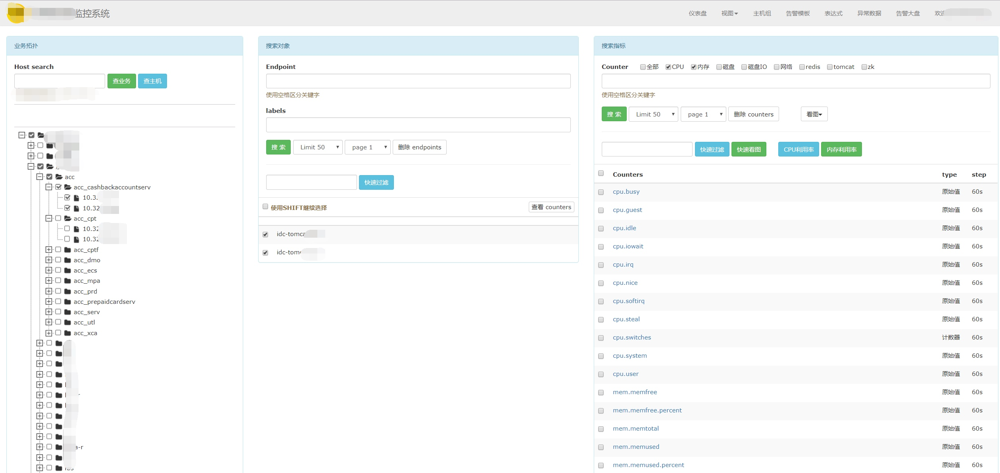

Open-Falcon 集成蓝鲸 CMDB 业务拓扑树
感谢社区用户 StephenWang 贡献该文档.
情景
Open-Falcon 是一款开源监控产品， 默认通过 Endpoint（一般为主机名） 查找服务器，体验不够友好。
集成蓝鲸配置平台的业务拓扑树，将首页左侧栏改造为服务树，通过选择业务模块快速选择机器，提高监控查看效率。
前提条件
- 主机纳管在蓝鲸配置平台中
- 在蓝鲸开发者中心 新建一个应用，用于调用 CMDB 的 API
- 熟悉
Python、JavaScript
操作步骤
- 配置平台中建立业务拓扑
- 查询主机及拓扑，写入 Redis
- 封装后台接口
- Open-Falcon 前端调用
- 预览效果
1. 配置平台中建立业务拓扑
参照 主机纳管在蓝鲸配置平台中，根据应用的部署分层架构，建立业务拓扑如下：

2. 查询主机及拓扑，写入 Redis
- 定时调用配置平台
查询主机:search_host接口 - 将结果转化为
ztree的数据格式，并写入 Redis
# -*- coding: utf-8 -*-
import requests
import redis
url = '/api/c/compapi/v2/cc/search_host/'
data = {
"bk_app_code": "", # 用于调用蓝鲸CMDB API的SaaS账号
"bk_app_secret": "", # 用于调用蓝鲸CMDB API的SaaS Token
"bk_username": "", # 拥有业务运维权限的蓝鲸账号
"condition": [
{
"bk_obj_id": "host",
"fields": []
},
{
"bk_obj_id": "module",
"fields": []
},
{
"bk_obj_id": "set",
"fields": []
},
{
"bk_obj_id": "biz",
"fields": [],
"condition": [
{
"field": "bk_biz_id",
"operator": "$eq",
"value": 3
}
]
}
]
}
topo = []
result = requests.post(url=url, json=data).json()
for res in result['data']['info']:
ip = res['host']['bk_host_innerip']
for module in res['module']:
topo2 = module['TopModuleName'].split('#')
sett = topo2[1]
modd = topo2[1] + '_' + topo2[2]
if {'id': sett, 'pid': 0, 'name': sett} not in topo:
topo.append({'id': sett, 'pid': 0, 'name': sett})
if {'id': modd, 'pid': sett, 'name': modd} not in topo:
topo.append({'id': modd, 'pid': sett, 'name': modd})
if {'id': ip, 'pid': modd, 'name': ip} not in topo:
topo.append({'id': ip, 'pid': modd, 'name': ip})
rdp = redis.ConnectionPool(host='',port=6379)
rdc = redis.StrictRedis(connection_pool=rdp)
topo = sorted(topo, key=lambda x: x['name'])
rdc.set('cmdb',str({'value':topo}))
3. 封装后台接口
- 用
flask开发接口，用于 Openfalcon 前端调用 - 跨域访问处理 : 调用外部接口，需要解决跨域问题
#-*-coding:utf-8 -*-
import flask
import redis
from flask import jsonify
from flask import request
from flask import make_response
server = flask.Flask(__name__)
@server.route('/topo_new_ztree/',methods=['post'])
def search_new_ztree():
"""
:method: post
:return:
"""
try:
rdp = redis.ConnectionPool(host='', port=6379)
rdc = redis.StrictRedis(connection_pool=rdp)
topo = eval(rdc.get('cmdb'))["value"]
response = make_response(jsonify({'result': 'success', 'message': topo}))
except Exception as e:
response = make_response(jsonify({'message': {'msg': str(e)}, 'result': 'fail'}))
finally:
response.headers['Access-Control-Allow-Origin'] = '*'
response.headers['Access-Control-Allow-Methods'] = 'POST'
response.headers['Access-Control-Allow-Headers'] = 'x-requested-with,content-type'
return response
4. 前端样式调整
修改 Open-Falcon 前端页面dashboard/rrd/templates/index.html
前端拓扑树选择 ztree 插件：支持模糊查询，勾选事件等，具体功能可查询 官方 API
- 调用上述的接口,
ztree加载返回结果 - 拓扑树中可以自定义勾选事件
var post_url='/topo_new_ztree/';
function createTree(post_url){
var zTree;
var setting = {
check: {
enable: true
},
view: {
dblClickExpand: true,
},
data: {
simpleData: {
enable: true,
idKey: "id",
pIdKey: "pid",
rootPId: 0
}
},
callback:{
onCheck:onCheck
}
};
function onCheck(){
//自定义勾选事件
};
$.post(post_url,function(data){
zTree = $.fn.zTree.init($("#tree"), setting, data.message);
});
}
5. 预览效果
可直接通过左侧的服务树选择资源，十分方便。

改造前，查找资源只能通过检索，十分不便，如下图：

注: CMDB 中的资源经常变动，建议使用事件驱动的消息推送来监听资源变化，而不是周期获取。